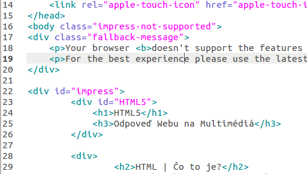

HTML5
Odpoveď Webu na Multimédiá
HTML | Čo to je?
Jazyk webu - text a 'znacky'
HTML5 | Čo je zas toto?
Nova doba, novy Web
HTML + CSS + JS + extras
HTML5 | <audio>
HTML5 | <video>
HTML5 | <canvas>
JavaScript
CSS3
- Modularizacia
- Transformacie
- 3D efekty
- ... tato prezentacia je 95% CSS3
HTML5
Dakujem za pozornost
Matej Gagyi 2013 (TUKE)